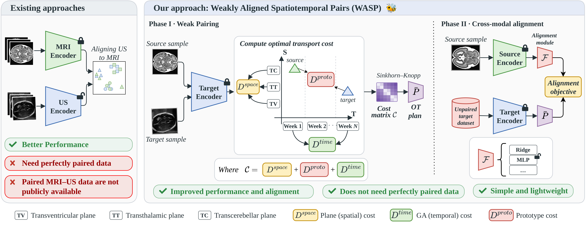
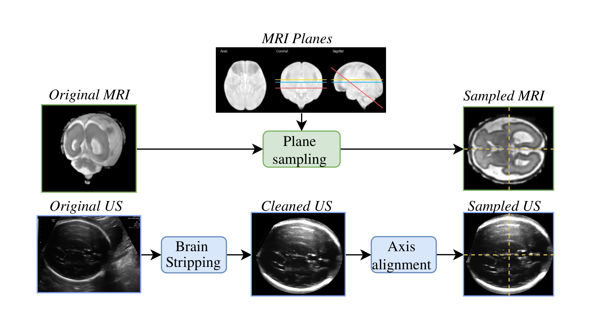

Teaching ultrasound-only foundation models to read fetal MRI, without paired scans and without fine-tuning.

Magnetic Resonance Imaging (MRI) is widely regarded as the optimal sensor for fetal brain analysis due to its superior soft tissue contrast and anatomical detail. However, its high cost and operational burden make it invasive and difficult to obtain at scale. Ultrasound (US), in contrast, is cheap, safe, and routinely acquired, and as a result it has produced substantially larger datasets and a growing ecosystem of pretrained models. This asymmetry raises a natural question: can we teach a US-only model to understand fetal MRI from only a limited set of examples? The standard recipe, training a foundation model on subject-to-subject paired MRI–US scans, is not viable since no such paired fetal dataset is publicly available. We address this gap with Weakly Aligned Spatiotemporal Pairs (WASP), a framework that formulates cross-modal correspondence as an entropic Optimal Transport problem driven by clinical metadata, in particular Gestational Age (GA) and diagnostic planes, enabling the fitting of a lightweight alignment head that lifts MRI representations into the US latent space without fine-tuning the backbone. WASP yields its largest gains when MRI is unseen by the model during pretraining: on USFM, GA estimation error drops from 21.9 to 17.4 days and standard plane classification accuracy climbs from 61.9% to 69.0%. It also provides smaller, backbone-dependent refinements for backbones pretrained on both modalities, e.g. BioMedParse GA error from 6.5 to 6.0 days and SAM-Med2D plane accuracy from 83.3% to 88.1%.
No public dataset pairs fetal MRI and ultrasound from the same subject. But every exam records when it was acquired (gestational age) and where it looks (the standard plane: transventricular, transthalamic or transcerebellar). WASP turns these two facts into soft cross-modal pairs.
\(D^{\text{time}}\) is the gestational-age gap, \(D^{\text{proto}}\) the distance between the target-space prototypes of each sample's plane and age bin, and \(D^{\text{space}}\) is 1 when the planes differ. \(\mathcal{Z}\) standardizes each term.
Sinkhorn solves the entropic OT problem on \(C\). Each source sample is paired with the barycentric projection of the target embeddings under the plan.
A lightweight map \(\mathcal{F}\) (Ridge, CCA or a small MLP) is fitted on the weak pairs. The backbone stays frozen.
A Ridge regressor (GA) and a linear SVM (plane) are fitted on the aligned features and evaluated on held-out subjects.
4,056 fetal brain images from 1,973 subjects. The ultrasound cohort comes from FETAL_PLANES_DB, HC18 and a UCLH cohort; the MRI cohort from FeTA, LFC and the CRL spatiotemporal atlas.
Ultrasound images are brain-stripped and rotated so that the head axis is horizontal. MRI volumes are registered to the atlas of their gestational week, and the three standard planes are sampled from them.

@inproceedings{correnti2026wasp,
title = {{WASP}: Weakly Aligned Spatiotemporal Pairs for Fetal Brain {MRI}--Ultrasound Learning},
author = {Correnti, Francesco and Magrini, Gabriele and Mistretta, Marco and
Biondi, Niccol{\`o} and Pala, Pietro and Ramalli, Alessandro and
Fiori, Simona and Bagdanov, Andrew D. and Lenge, Matteo},
booktitle = {Advances in Neural Information Processing Systems},
year = {2026}
}